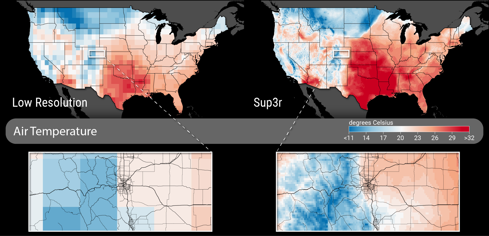
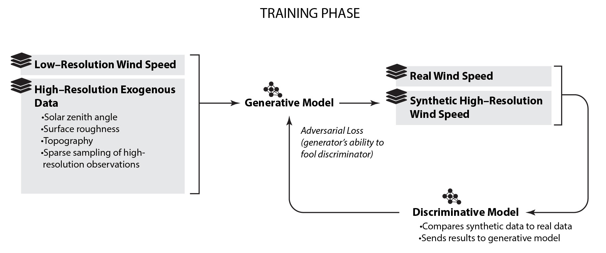
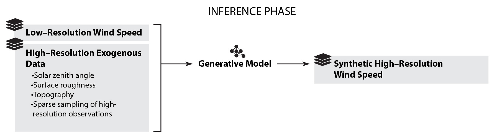

Developed by NREL, Sup3r is open-source software that transforms coarse, low-resolution data into actionable and accessible hyper-local data at unprecedented speed and scale.
Sup3r (pronounced “super”) is open-source software paired with publicly available datasets that leverages generative adversarial networks to efficiently downscale global climate model data, improving resolution across space and time while preserving physical accuracy.
By dramatically cutting computational time and cost, Sup3r delivers the data needed for efficient, highly detailed energy system modeling and analysis.
Getting Started#
Here are some options to get started with sup3r:
Learn how to install sup3r.
Learn how sup3r works.
Learn about our current applications of sup3r.
Learn about the methods and validation of sup3r from our publications.
To access output datasets, see our data records from previous applications.
To get started running sup3r software, check out our test suite that uses the software on small pieces of test data.
To get started loading in data for training or inference, start with the data handler object that is our basic data structure that opens NREL .h5 and other .nc data files.
To get started with model training, check out our training tests that initialize and train a basic GAN on small test data.
To get started with model inference, check out our forward pass tests that run a simple inference on small test data. Alternatively, see the examples linked below.
To see previous examples of sup3r code, configs, pretrained models, and data, see our published examples.
To setup full runs on an HPC environment, check out the sup3r command line interface (CLI).
How it Works#
Sup3r uses a generative machine learning approach to produce synthetic high-resolution spatiotemporal energy resource data from coarse, low-resolution inputs. The process is described step-by-step below.
Step 1: Learns High-Resolution Physics From Historical Data (Training Phase)#
During what’s called the “training phase,” Sup3r learns how large-scale weather patterns relate to local, detailed conditions using high-resolution historical weather data. Its advanced model design allows it to learn from both simulated data and real-world weather measurements. This helps build neural networks that capture both scientific understanding and real data, making them useful for a variety of applications.
At the heart of this process is a generative adversarial network (GAN), which is like a game between two competing players:
The Generator: Learns to create realistic high-resolution data from coarse climate inputs
The Discriminator: Learns to tell the difference between real data (e.g., observed high-resolution weather) and the Generator’s output.
Ultimately, the model’s success is determined by the Generator’s ability to “fool” the Discriminator by producing data that is indistinguishable from real-world data. By optimizing for both adherence to the climate inputs and physical realism, Sup3r not only minimizes quantitative bias but also ensures the physics of the high-resolution data are realistic. This is especially important for downstream applications such as power system operational modeling, where fine-scale spatial structure and high-frequency temporal dynamics matter as much as statistical accuracy.
Step 2: Collects Coarse Climate Data and Scenarios#
The Sup3r software can use input data from global climate models that have very low resolutions (up to 100 kilometers wide per grid cell with 1 average data point per day). This publicly available input data is useful for understanding general trends but is too coarse to help with local decision making, like where to place a wind farm or how a certain neighborhood might suffer from extreme heat. One of Sup3r’s key strengths lies in its flexibility, allowing users to choose from countless publicly available climate datasets. This feature empowers users to easily explore various potential futures and make informed decisions based on a range of possibilities.
Step 3: Generates Realistic, High-Resolution Climate Data (Inference Phase)#
During what’s called the “inference phase,” Sup3r uses generative models that were trained in Step 1 and the low-resolution climate data gathered in Step #2 to produce hyper-local data at a 0.5- to 4-kilometer resolution with a 5- to 60-minute frequency (depending on the application) for all requested meteorological variables. Sup3r has been proven to generate output that reproduces the large-scale dynamics in the data from Step 2 while capturing realistic physics at the finest scales.
Applications of Sup3r#
Sup3rCC#
Sup3rCC is an application of the Sup3r software that downscales global climate model outputs to 4-km spatial and hourly temporal resolution. It provides high-resolution data on temperature, humidity, wind, and solar irradiance, supporting analysis of energy system resilience under future climate conditions. Notably, Sup3rCC does not represent real historical weather events, unlike Sup3rWind or Sup3rUHI (described below).
To learn more about Sup3rCC, check out the publication list below or the Sup3rCC example.
Sup3rWind#
Sup3rWind uses the Sup3r software to produce high-resolution historical wind resource data by downscaling global reanalysis datasets—which combine historical weather observations with modern forecasting models—to 2-km spatial and 5-minute temporal resolution. It improves the representation of extreme wind events and preserves important spatiotemporal patterns for use in energy system planning and operations. Sup3rWind data is used by wind energy developers worldwide.
To learn more about Sup3rWind, check out the publication list below or the Sup3rWind example.
Sup3rUHI#
Sup3rUHI applies the Sup3r software to urban environments, combining satellite observations and ground measurements to generate hyper-local temperature and humidity time series. It supports both historical analysis and future scenario modeling, enabling precise, data-driven planning for high-risk heat events.
To learn more about Sup3rUHI, check out the publication list below or the Sup3rUHI repo.
Installing sup3r#
NOTE: The installation instructions below assume that you have python installed on your machine and are using either conda or pixi as your package/environment manager.
Option 1: Install from PIP (recommended for analysts):#
Create a new environment:
conda create --name sup3r python=3.11Activate environment:
conda activate sup3rInstall sup3r:
pip install NREL-sup3rRun this if you want to train models on GPUs:
pip install tensorflow[and-cuda]4.1 For OSX use instead:
python -m pip install tensorflow-metal
Option 2: Clone repo (recommended for developers)#
Run
git clone git@github.com:NREL/sup3r.gitcd sup3r.Make sure the branch is correct (install from main!)
If you are using conda, create and activate a new environment:
conda create --name sup3r python=3.11andconda activate sup3r4.1 Install
sup3rand its dependencies by running:pip install .(orpip install -e .for editable install)4.2 Run this if you want to train models on GPUs:
pip install tensorflow[and-cuda]Alternatively, run
pixi installOptional: Set up the pre-commit hooks with
pip install pre-commitorpixi add pre-commitandpre-commit install
Recommended Citation#
Update with current version and DOI:
Brandon Benton, Grant Buster, Guilherme Pimenta Castelao, Malik Hassanaly, Pavlo Pinchuk, Slater Podgorny, Andrew Glaws, and Ryan King. Super Resolution for Renewable Resource Data (sup3r). NREL/sup3r (version v0.2.3), 2025. https://doi.org/10.5281/zenodo.15586596
Publications#
Estimating the impacts of increasing temperatures and the efficacy of climate adaptation strategies in urban microclimates with deep learning, Urban Climate (2025) https://doi.org/10.1016/j.uclim.2025.102603
Second-Generation Downscaled Earth System Model Data using Generative Machine Learning, Data in Brief (2025) https://doi.org/10.1016/j.dib.2025.111774
Super-Resolution for Renewable Energy Resource Data with Wind from Reanalysis Data and Application to Ukraine, Energies (2025) https://doi.org/10.3390/en18143769
High-Resolution Meteorology With Climate Change Impacts From Global Climate Model Data Using Generative Machine Learning, Nature Energy (2024) https://doi.org/10.1038/s41560-024-01507-9
Adversarial Super-Resolution of Climatological Wind and Solar Data, Proceedings of the National Academy of Sciences (2020) https://doi.org/10.1073/pnas.1918964117
Data Records#
Super-Resolution for Renewable Energy Resource Data with Climate Change Impacts (Sup3rCC). [Data set]. Open Energy Data Initiative (OEDI). National Renewable Energy Laboratory (NREL). https://doi.org/10.25984/1970814
Super-Resolution for Renewable Energy Resource Data with Wind from Reanalysis (Sup3rWind). [Data set]. Open Energy Data Initiative (OEDI). National Renewable Energy Laboratory. https://data.openei.org/submissions/8455
Super-Resolution for Renewable Resource Data and Urban Heat Islands (Sup3rUHI). [Data set]. Open Energy Data Initiative (OEDI). National Renewable Energy Lab (NREL). https://data.openei.org/submissions/6220
Acknowledgments#
This work was authored by the National Renewable Energy Laboratory, operated for the U.S. Department of Energy (DOE) under Contract No. DE-AC36-08GO28308. This research was supported by the Grid Modernization Initiative of the U.S. Department of Energy (DOE) as part of its Grid Modernization Laboratory Consortium, a strategic partnership between DOE and the national laboratories to bring together leading experts, technologies, and resources to collaborate on the goal of modernizing the nation’s grid. Funding provided by the the DOE Office of Energy Efficiency and Renewable Energy (EERE), the DOE Office of Electricity (OE), DOE Grid Deployment Office (GDO), the DOE Office of Fossil Energy and Carbon Management (FECM), and the DOE Office of Cybersecurity, Energy Security, and Emergency Response (CESER), the DOE Advanced Scientific Computing Research (ASCR) program, the DOE Solar Energy Technologies Office (SETO), the DOE Wind Energy Technologies Office (WETO), the United States Agency for International Development (USAID), and the Laboratory Directed Research and Development (LDRD) program at the National Renewable Energy Laboratory. The research was performed using computational resources sponsored by the Department of Energy’s Office of Energy Efficiency and Renewable Energy and located at the National Renewable Energy Laboratory. The views expressed in the article do not necessarily represent the views of the DOE or the U.S. Government. The U.S. Government retains and the publisher, by accepting the article for publication, acknowledges that the U.S. Government retains a nonexclusive, paid-up, irrevocable, worldwide license to publish or reproduce the published form of this work, or allow others to do so, for U.S. Government purposes.